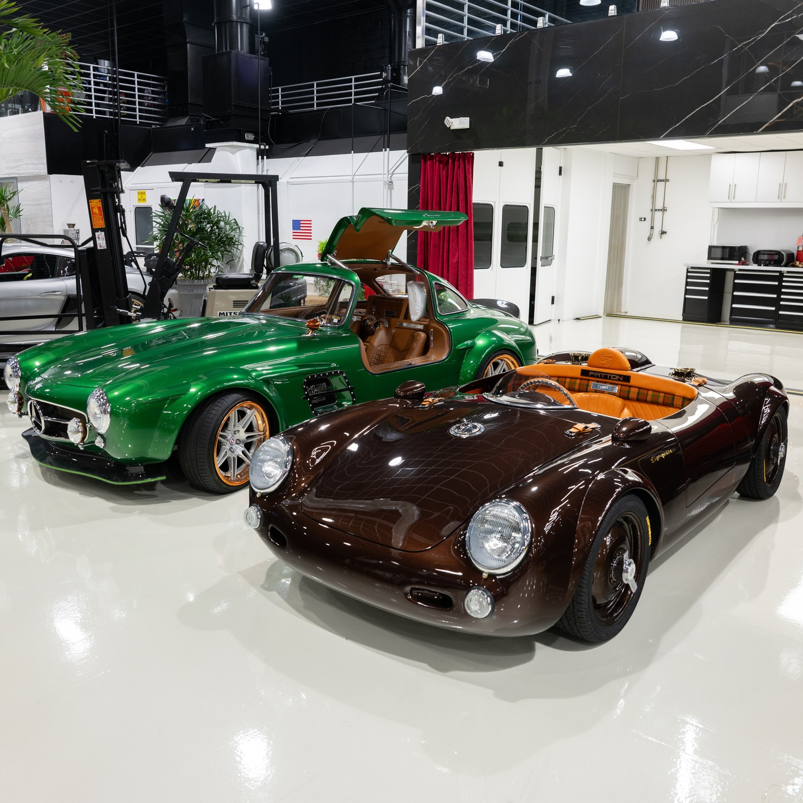
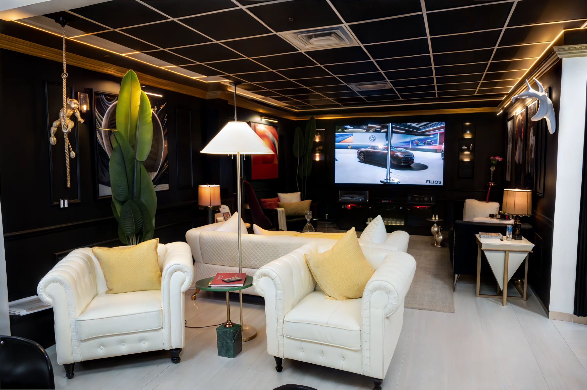

Pompano Beach, Florida
A bohemian car place
Forty collector cars on the floor in Pompano Beach, and four on the block this week.
See the floorLive auction · sample data
Four lots, and a clock on each
1965 Ferrari 250 GTO
- Current bid
- $612,000
- Closes in
- 2:14:08
Bidding opens to registered buyers seven days before the hammer. Lots close on Sunday evening, twenty minutes apart, and every car on the block comes off the floor while it is running.
- Lot
- 01 · closes first
- Bids
- 24
- Reserve
- Met
- Specification
- Coupe · Rosso Corsa over Nero · 4.0 V12
 Live
Live


The sale closes Sunday evening. The last two minutes extend on a bid.

Featured
1955 Porsche 356 Outlaw Speedster
Tiff & Co. by S-Klub · Grey pearlescent over oxblood
The floor · Pompano Beach
Seventeen brands, seventy years apart
A Chiron stands feet from a 997 GT3 RS and a Fiat Jolly. Eight cars carry a price and the rest are on request — not coyness, just how this end of the market works.
Sell & consign
Three ways out of your garage
Tell us what you have and we will tell you which of the three gets you the most for it — including when the answer is none of them.
Submit your vehicleWho is behind it
Built by people
who keep the cars
Founded by Martin Patton, the building sits between Palm Beach and Miami, in one of the largest car cultures in the country. Three businesses share its floor: a dealership, an auction house, and a room that opens on Saturday mornings for anyone who wants to stand next to the cars.

- 40
- Cars on the floor
- 17
- Brands represented
- 70
- Years covered · 1955–2025
- Pompano Beach
- Florida, between Palm Beach and Miami
- 01
The logo
Drawn by Dave Kindig, of Kindig Design.
- 02
S-Klub
Exclusive United States dealer, Los Angeles.
- 03
Built here
John and Edison Sarkisyan, whose cars place at SEMA.
- 04
In the back
An art studio: paintings, sculpture, slot cars, made on site.

Open Saturday · 9 to 1
Cars, coffee, cocktails
and conversation
Black walls and a gold cornice, white Chesterfields, a gold monkey on a rope, a white deer head, a racing game on the big screen and a full bar. There is an art studio in the back.
Directions